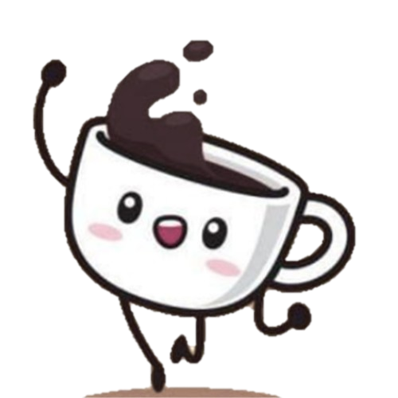
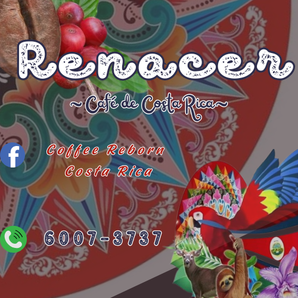
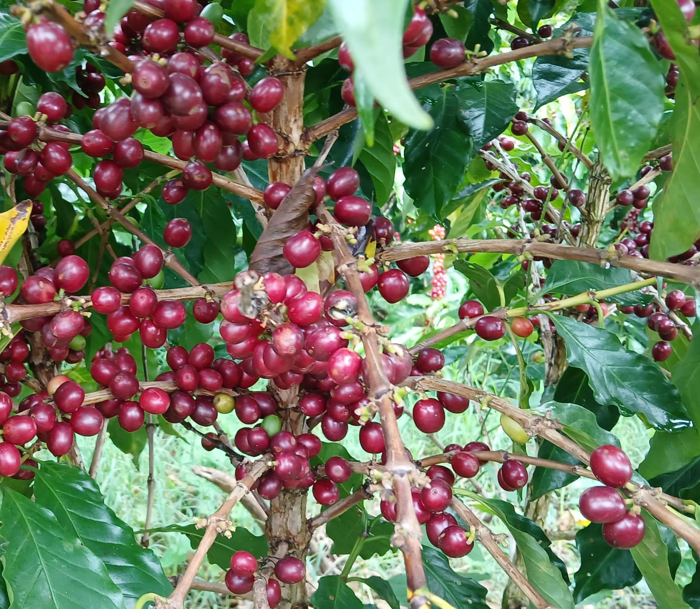
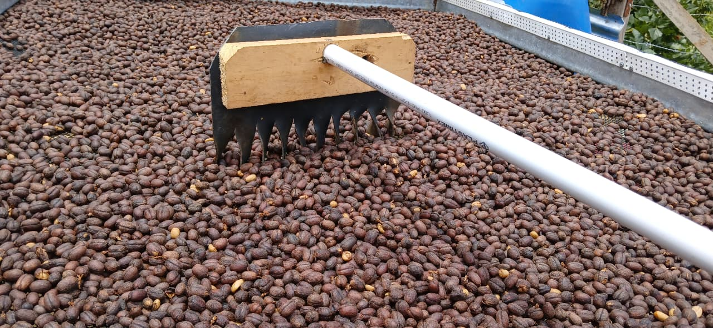
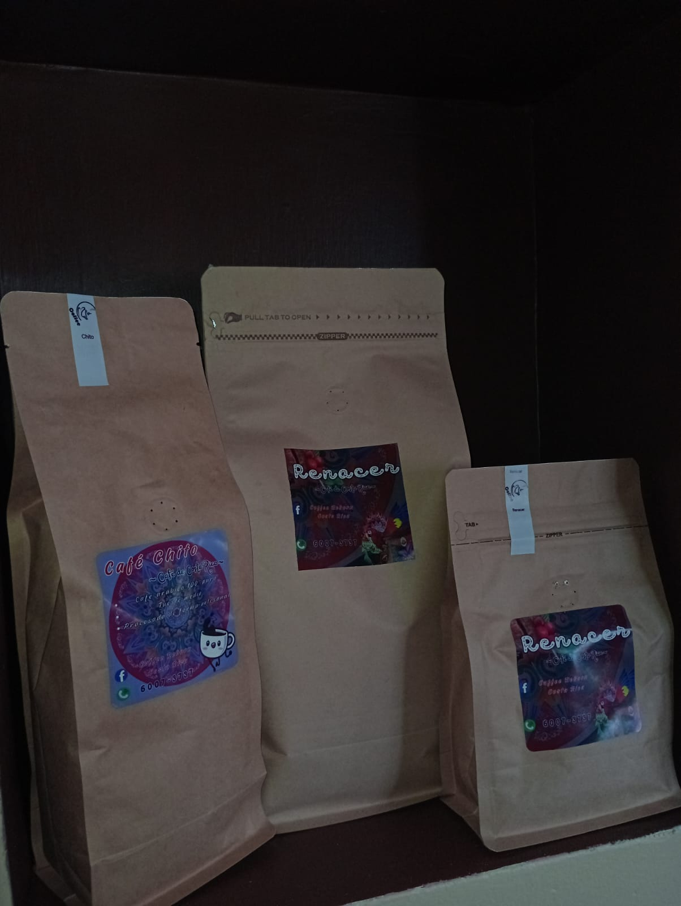
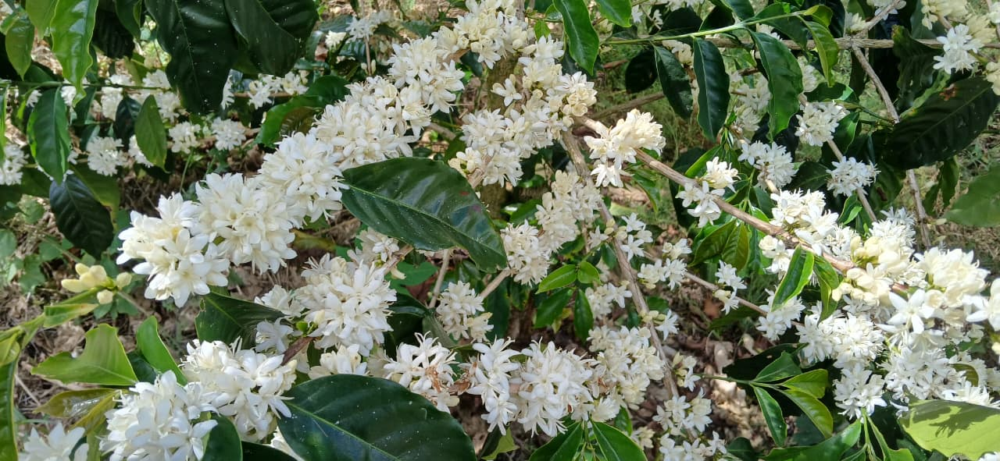
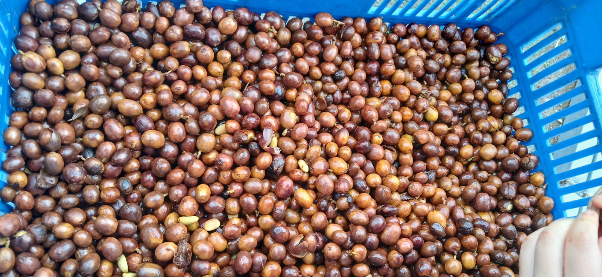
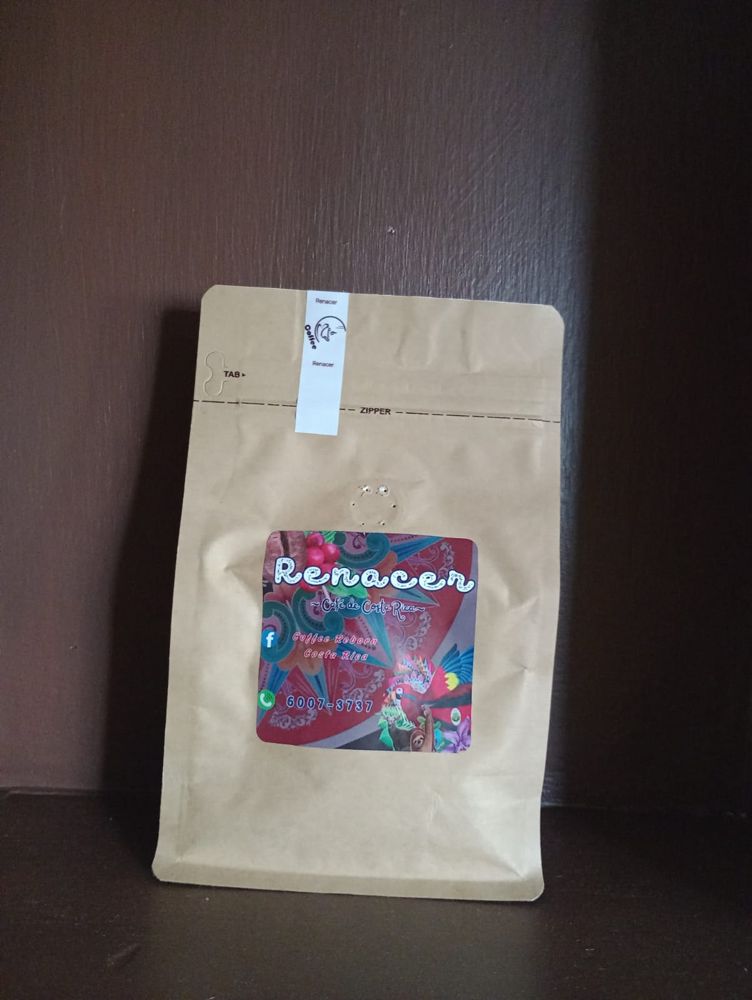
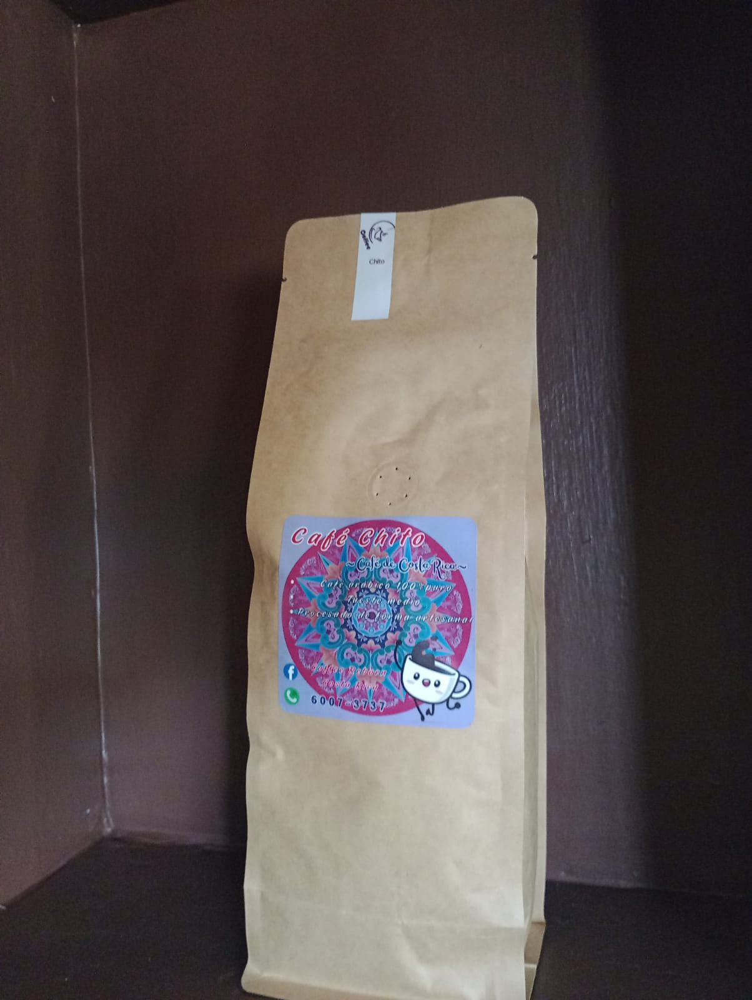
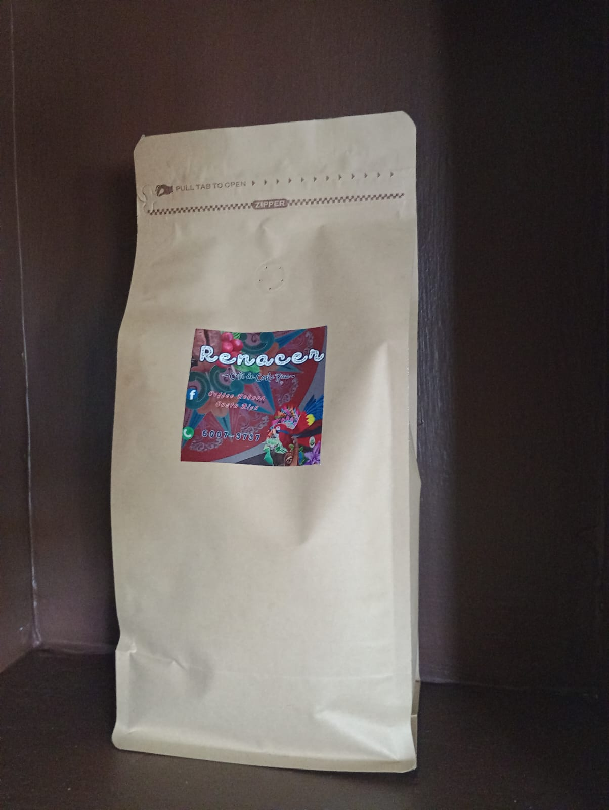

Cafechito representa el origen de nuestra tradición. Un pequeño grano que simboliza el esfuerzo de generaciones de caficultores costarricenses.
Nuestro café nace de la pasión por la calidad, seleccionando cuidadosamente cada grano para ofrecer una experiencia auténtica.


Proveniente del Valle Central, Los Santos y Orosi, nuestro café refleja el sabor y la identidad de las montañas de Costa Rica.
Cada taza es historia, tradición y pasión.

Recolectamos únicamente los granos maduros para garantizar la mejor calidad.
Controlamos cada detalle del tueste para resaltar los sabores únicos del café.

Protegemos la frescura y el aroma hasta llegar a tu taza.

El café fue descubierto en Etiopía hace más de mil años.
El nivel de tueste define aroma, sabor e intensidad.

Costa Rica produce café 100% arábica de alta calidad.
El café recién molido conserva mejor su aroma.

Disponible en RENACER o CAFECHITO.

Disponible en RENACER o CAFECHITO.

Disponible en RENACER o CAFECHITO.